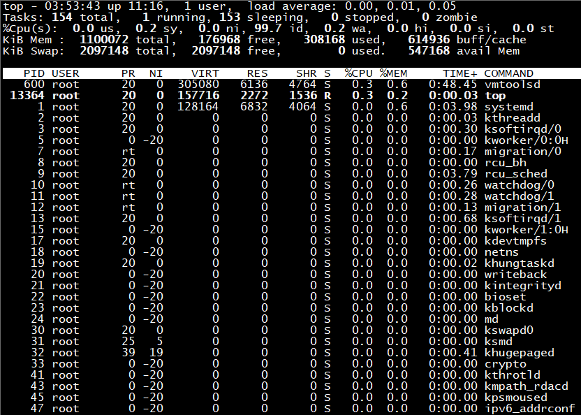
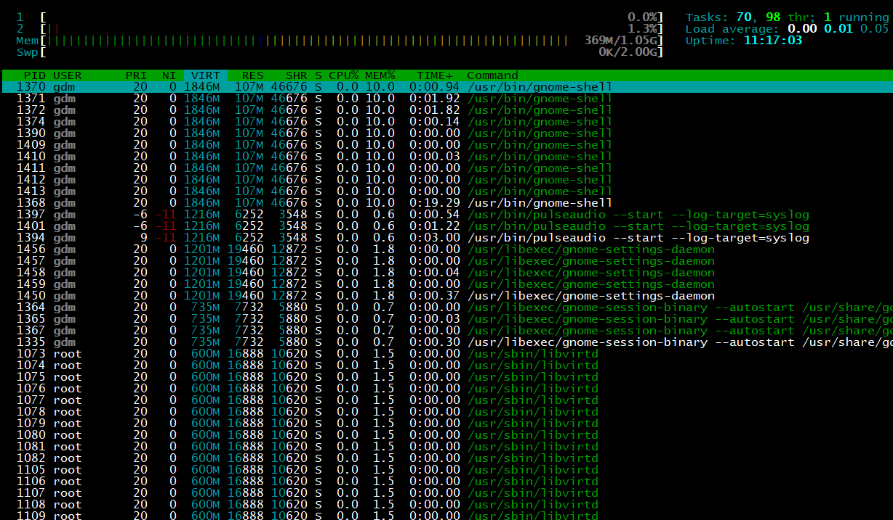
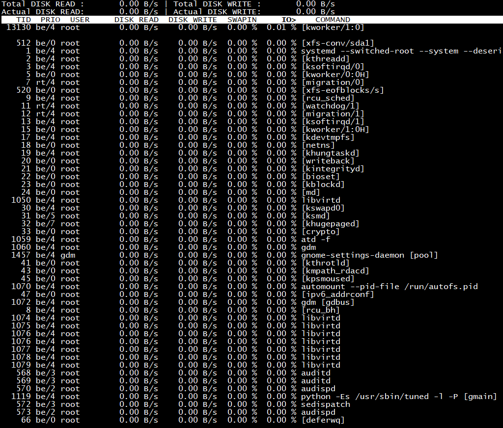
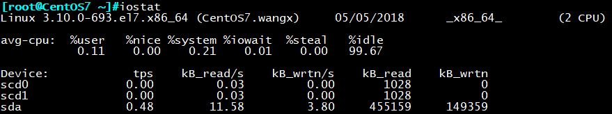
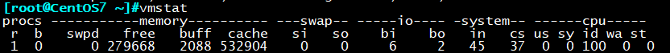
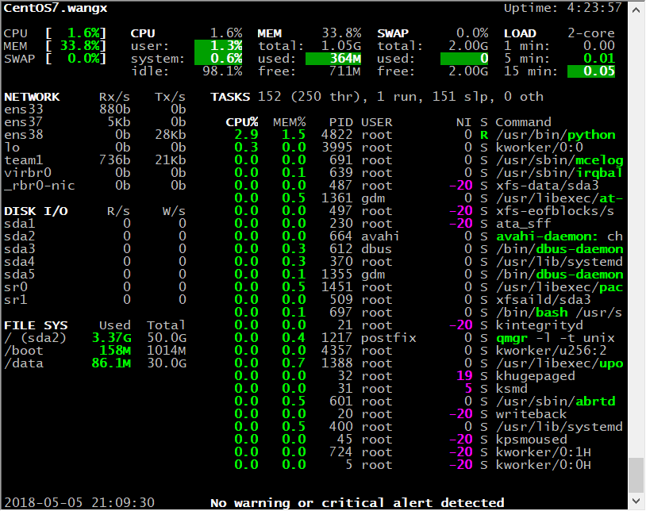
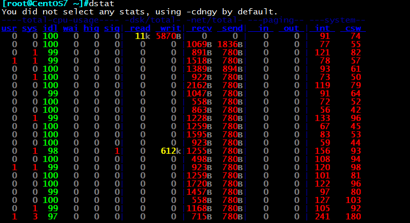

一、top——进程监控工具
相对于ps而言，ps显示的是某个时间点的进程状态信息，top命令工具类似于windows系统的任务管理器，
可以动态的持续监控进程的运行状态

每一行的代表的含义为：
第一行：
1.当前系统时间
2.系统已启动的时间
3.当前登录用户数
4.系统平均负载（1min、5min、15min），超过1表示负载过高
第二行：
当前进程的总量，以及处于各种状态的进程的数量，要注意最后的zombie，不为0
要及时查看哪个进程处于僵死状态
第三行：CPU的整体负载，多核CPU可按1切换不同CPU的负载率
us：user space 用户运行程序占用CPU百分比
sy：system 用于运行内核占用CPU百分比
ni：nice用户进程空间所改变过优先级的进程占用CPU百分比
id：idle 空闲CPU百分比
wa：wait to 等待I/O花费时间
hi：hardware interrupt 硬件中断占用CPU的百分比
si：software interrupt 软件中断占用CPU的百分比
st：stolen 被偷走的CPU百分比，一般为虚拟机占用
第四行：表示物理内存的使用情况
第五行：表示交换分区的使用情况
第六行：这里默认显示空白，可以输入指令，包括：
P 以占据的CPU百分比大小排序
M 以内存占比大小排序
T CPU累加占用时间排序
l 是否显示系统负载行
t 是否显示进程摘要信息及CPU负载状态
1 数字1，平均或单独显示各CPU负载信息
m 是否显示内存相关状态信息
q 退出
s 修改延迟时长
k 终止指定进程
top输出下面的部分：
PID 进程ID
USER 进程所有者
PR 进程优先级，越小优先级越高
NI nice优先级，越小优先级越高
VIRT 进程需要占用的内存大小
RES 进程当前实际占用内存大小
SHR 进程与其他进程恭喜的内存大小
S 进程状态
%CPU CPU占有率
%MEM 内存使用率
TIME+ 进行CPU使用时间累加
COMMAND 进程或命令名称
二、htop——top增强版进程监控工具
htop是top命令工具的增强版，系统默认没有按照，需epel源进行安装

交互式命令：
u 选择显示指定用户的进程
l 显示光标所在进程缩打开的文件列表
s 显示光标所在进程执行的系统调用
a 绑定进程到指定cpu（退出htop失效）
# 快速定位光标至PID为#的进程上
htop支持的一些信息
-d # 延迟时长
-u USERNAME：显示指定用户的进程
-s COLUMN：根据指定字段进行排序
三、iotop、iostat——磁盘读写监控工具
iotop命令是一个用来监视磁盘I/O使用状况的top类工具iotop具有与top相似的UI，其
中包括PID、用户、I/O、进程等相关信息，可查看每个进程是如何使用IO

每一行的代表的含义为：
第一行：Read和Write速率总计
第二行：实际的Read和Write速率
第三行：参数如下：
TID 线程ID（按p切换为进程ID）
PRIO 优先级
USER 用户
DISK READ 磁盘读速率
DISK WRITE 磁盘写速率
SWPIN swap交换百分比
IO> IO等待所占的百分比
COMMAND 线程/进程命令
交互按键
left和right方向键：改变排序
r：反向排序
o：切换至选项–only
p：切换至–processes选项
a：切换至–accumulated选项
q：退出
i：改变线程的优先级
iotop支持的选项：
-o, –only 只显示正在产生I/O的进程或线程，除了传参，可以在运行过程中按o生效
-b, –batch 非交互模式，一般用来记录日志
-n NUM, –iter=NUM 设置监测的次数，默认无限。在非交互模式下很有用
-d SEC, –delay=SEC 设置每次监测的间隔，默认1秒，接受非整形数据例如1.1
-p PID, –pid=PID 指定监测的进程/线程
-u USER, –user=USER 指定监测某个用户产生的I/O
-P, –processes 仅显示进程，默认iotop显示所有线程
-a, –accumulated 显示累积的I/O，而不是带宽
-k, –kilobytes 使用kB单位，而不是对人友好的单位。在非交互模式下，脚本编程有用
-t, –time 加上时间戳，非交互非模式
-q, –quiet 禁止头几行，非交互模式，有三种指定方式
-q 只在第一次监测时显示列名
-qq 永远不显示列名
-qqq 永远不显示I/O汇总
iostat 统计cpu和设备IO信息

第一段显示：内核版本（主机名） 当前日期 架构类型 核心数
第二段显示：cpu平均利用率
第三段显示：磁盘读写速度（kb/s）
四、vmstat——虚拟内存统计工具
通过top、htop我们可以获得一些进程对系统资源的使用情况，而vmstat则可以通过
内存、磁盘、网络、CPU来动态显示系统资源的使用情况。
格式：vmstat [options][delay [count]]
选项：
-s 显示内存的统计数据
-d 显示磁盘的统计数据

vmstat输出含义：
procs：
r：可运行进程的个数，和核心数有关
b：处于不可终端睡眠状态
memory：
swpd：交换内存的使用总量
free：空闲物理内存总量
buffer：用于buffer的内存总量
cache：用于cache的内存总量
swap：
si：从磁盘交换进内存的数据速率（kb/s）
so：从内存交换至磁盘的数据速率（kb/s）
io：
bi：从块设备读入数据到系统的速率（kb/s）
bo：保存数据至块设备的速率（kb/s）
system：
in：interrupts 中断速率，包括时钟
cs：进程切换速率
cpu：
us：user space 用户运行程序占用CPU百分比
sy：system 用于运行内核占用CPU百分比
id：idle 空闲CPU百分比
wa：wait to 等待I/O花费时间
st：stolen 被偷走的CPU百分比，一般为虚拟机占用
五、glances——可跨平台系统监控工具
glances是一款系统监视工具，能够监视CPU、负载、内存、磁盘I/O、网络流量、文件
系统、系统温度等信息。centos系统默认不安装glances工具，需手动安装（epel源）

glances可提供的监视和分析性能数据功能包括：
1.CPU使用率
2.内存使用情况
3.内核统计信息和运行队列信息
4.磁盘I/O速度、传输和读/写比率
5.文件系统中的可用空间
6.磁盘适配器
7.网络I/O速度、传输和读/写比率
8.页面空间和页面速度
9.消耗资源最多的进程
10.计算机信息和系统资源
常用选项：
-b： 以Byte为单位显示网卡数据速率
-d： 关闭磁盘I/O模块
-f： /path/to/somefile: 设定输入文件位置
-o： {HTML|CSV}：输出格式
-m： 禁用mount模块
-n： 禁用网络模块
-t #： 延迟时间间隔
-1： 每个CPU的相关数据单独显示
支持远程模式，可在C/S模式下运行glances命令：
注：glances版本最好一样
服务器模式：
glances -s -B IPADDR
IPADDR: 指明监听的本机哪个地址
客户端模式：
glances -c IPADDR
IPADDR：要连入的服务器端地址
六、dstat——多功能整合系统监控工具
dstat是一个多功能工具，他包含了vmstat，iostat，netstat这些命令的功能，并
增加了监控项，变得更加灵活。dstat可用于基准测试和排除故障。
默认情况下，dstat每秒刷新一次并显示结果，可按ctrl+c退出

每一区列代表的含义：
total-cpu-usage CPU使用率
dsk/total 磁盘读写总数
net/total 网络设备发送和接收数据的总数
paging 系统的分页活动，大多数情况我们希望此处两项为0
system 显示中断和上下文切换。只在有比较基线时才有意义。这一栏较高
的统计值通常表示大量进程造成拥塞
dstat支持的选项：
-c 显示cpu性能指标相关统计数据
-d 显示磁盘disk相关速率
-g 显示page相关速率数据
-m 显示内存memory相关统计数据
-n 显示网络network相关统计数据
-p 显示进程process相关统计数据
-r 显示io请求相关统计数据
-s 显示swap的相关数据
长选项：
–top-cpu 显示最占用CPU的进程
–top-io 显示最占用io的进程
–top-mem 显示最占用内存的进程
–top-latency 显示延迟最大的进程
–tcp 显示tcp套接字相关数据
–udp 显示udp套接字相关数据
–unix 显示unix sock接口相关统计数据
–raw 显示raw套接的相关数据
–socket 显示套接相关数据
–ipc 显示进程间通信相关的速率数据